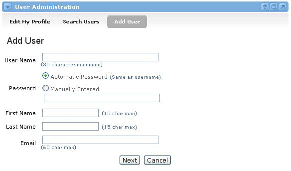
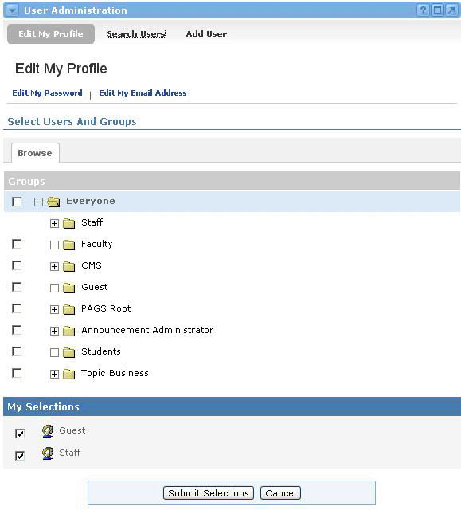

Adding Portal Users
To add a new user to the system, complete the following steps:
- Locate the User Administration channel and click the Add User link at the top of the channel.
- This will take you to the Add User view where you must provide information about the new user.
- Type a User Name in the first text field. The User Name must be unique to the system. If anyone else is already using the User Name you provide, you will have to choose another one.
- Now select a Password. If you want the Password to be the same as the User Name, then select the Automatic Password radio button. Otherwise, select the Manually Entered radio button and type a Password in the text field provided.
- Type the user's First Name in the First Name field.
- Type the user's Last Name in the Last Name field.
- Type the user's Email Address in the Email field.
- Once you are satisfied with all of your selections, click the Next button to add this new user.
The next view will allow you to select the groups in which this new user will be enrolled.
- Select groups by clicking the check box next to the desired group(s) and click Submit.

